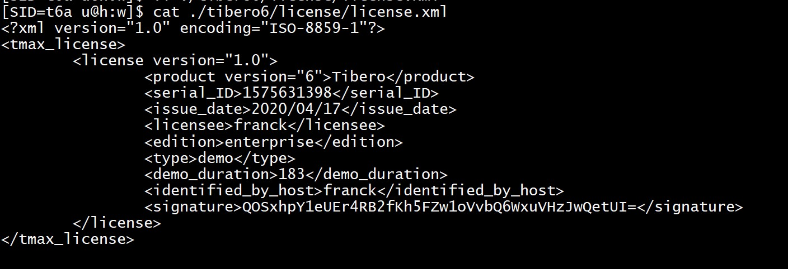
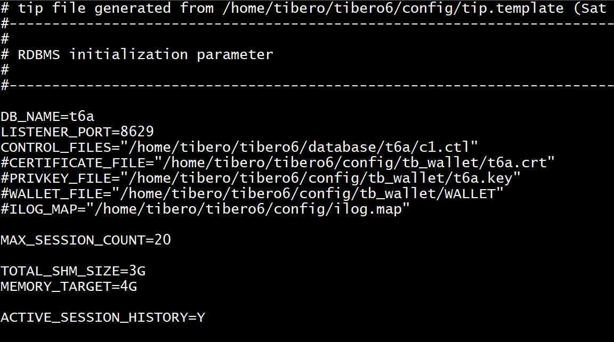
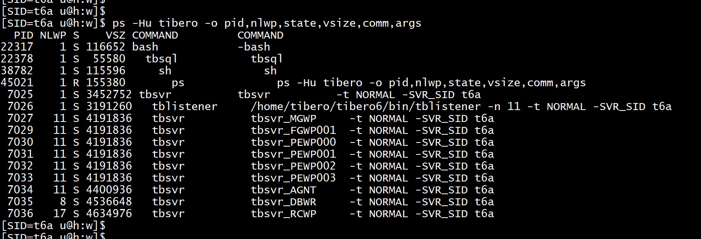
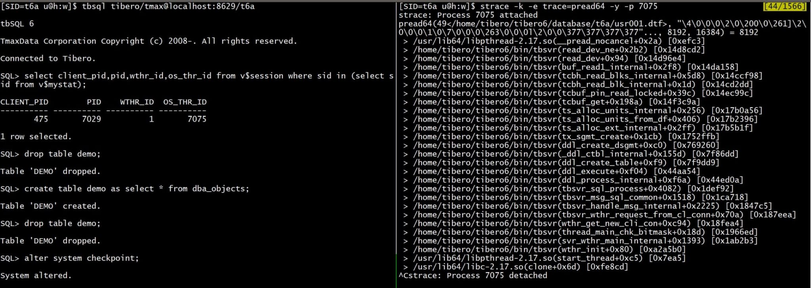

This was first published on https://www.dbi-services.com/blog/tibero-i/ (2020-04-22)
Republishing here for new followers. The content is related to the versions available at the publication date.
.
Do you remember that time where we were able to buy IBM PC clones, cheaper than the IBM PC but fully compatible? I got the same impression when testing Tibero, the TmaxSoft relational database compatible with the Oracle Database. Many Oracle customers are looking for alternatives to the Oracle Database, because of unfriendly commercial and licensing practices, like forcing the usage of expensive options or not counting vCPU for licensing. Up to now, I was not really impressed by the databases that claim Oracle compatibility. You simply cannot migrate an application from Oracle to another RDBMS without having to change a lot of code. This makes it nearly impossible to move a legacy application where the business logic has been implemented during years in the database model and stored procedures. Who will take the risk to guarantee the same behavior even after very expensive UAT? Finally, with less effort, you may optimize your Oracle licenses and stay with the same database software.
However, in Asia, some companies have another reason to move out of Oracle. Not because of Oracle, but because it is an American company. This is true especially for public government organizations for which storing data and running critical application should not depend on a US company. And once they have built their alternative, they may sell it worldwide. In this post I’m looking at Tibero, a database created by a South Korean company – TmaxSoft – with an incredible level of compatibility with Oracle.
I’ll install and run a Tibero database to get an idea about what compatibility means.
After creating a login account on the TmaxSoft TechNet, I’ve requested a demo license on: https://technet.tmaxsoft.com/en/front/common/demoPopup.do
You need to now the host where you will run this as you have to provide the result of `uname -n` to get the license key. That’s a 30 days trial (longer if you don’t restart the instance) that can run everything on this host. I’ve used an Oracle Compute instance running OEL7 for this test. I’ve downloaded the Tibero 6 software installation: tibero6-bin-FS07_CS_1902-linux64–166256-opt.tar.gz from TmaxSoft TechNet > Downloads > Database > Tibero > Tibero 6
For the installation, I followed the instructions from https://store.dimensigon.com/deploy-tibero-database/ that I do not reproduce here. Basically, you need some packages, some sysctl.conf settings for shared memory, some limits.conf settings, a user in ‘dba’ group,… Very similar to Oracle prerequisites. Then untar the software – this installs a $TB_HOME about 1GB.
I used the old TechNet website here. Currently, you should download the software from the support website: https://support.tmaxsoft.com/s/release/a0j1Y00000b3GAIQA2/tibero-6
And get the license key from: https://support.tmaxsoft.com/s/createrecord/NewTrialKeyRequest but you need to login first. See https://www.tmaxsoft.com/feature-item/30-day-free-trial/ to get one.
The first difference with Oracle is that you cannot start an instance without a valid license file:
$ $TB_HOME/bin/tb_create_db.sh
********************************************************************
* ERROR: Can't open the license file!!
* (1) Check the license file - /home/tibero/tibero6/license/license.xml
********************************************************************
I have my trial license file and move it to $TB_HOME/license/license.xml 
The creation of the database is ready and there’s a simple tb_create_db.sh for that. First stage is starting the instance (NOMOUNT mode):
$ $TB_HOME/bin/tb_create_db.sh
Listener port = 8629
Tibero 6
TmaxData Corporation Copyright (c) 2008-. All rights reserved.
Tibero instance started up (NOMOUNT mode).
A few information about settings is displayed:
+----------------------------- size -------------------------------+
system size = 100M (next 10M)
syssub size = 100M (next 10M)
undo size = 200M (next 10M)
temp size = 100M (next 10M)
usr size = 100M (next 10M)
log size = 50M
+--------------------------- directory ----------------------------+
system directory = /home/tibero/tibero6/database/t6a
syssub directory = /home/tibero/tibero6/database/t6a
undo directory = /home/tibero/tibero6/database/t6a
temp directory = /home/tibero/tibero6/database/t6a
log directory = /home/tibero/tibero6/database/t6a
usr directory = /home/tibero/tibero6/database/t6a
And the creation is going - that really looks like an Oracle Database:
+========================== newmount sql ==========================+
create database "t6a"
user sys identified by tibero
maxinstances 8
maxdatafiles 100
character set MSWIN949
national character set UTF16
logfile
group 1 ('/home/tibero/tibero6/database/t6a/log001.log') size 50M,
group 2 ('/home/tibero/tibero6/database/t6a/log002.log') size 50M,
group 3 ('/home/tibero/tibero6/database/t6a/log003.log') size 50M
maxloggroups 255
maxlogmembers 8
noarchivelog
datafile '/home/tibero/tibero6/database/t6a/system001.dtf'
size 100M autoextend on next 10M maxsize unlimited
SYSSUB
datafile '/home/tibero/tibero6/database/t6a/syssub001.dtf'
size 10M autoextend on next 10M maxsize unlimited
default temporary tablespace TEMP
tempfile '/home/tibero/tibero6/database/t6a/temp001.dtf'
size 100M autoextend on next 10M maxsize unlimited
extent management local autoallocate
undo tablespace UNDO
datafile '/home/tibero/tibero6/database/t6a/undo001.dtf'
size 200M
autoextend on next 10M maxsize unlimited
extent management local autoallocate
default tablespace USR
datafile '/home/tibero/tibero6/database/t6a/usr001.dtf'
size 100M autoextend on next 10M maxsize unlimited
extent management local autoallocate;
+==================================================================+
Database created.
Listener port = 8629
Tibero 6
TmaxData Corporation Copyright (c) 2008-. All rights reserved.
Tibero instance started up (NORMAL mode).
Then the dictionary is loaded (equivalent to catalog/catproc):
/home/tibero/tibero6/bin/tbsvr
Dropping agent table...
Creating text packages table ...
Creating the role DBA...
Creating system users & roles...
Creating example users...
Creating virtual tables(1)...
Creating virtual tables(2)...
Granting public access to _VT_DUAL...
Creating the system generated sequences...
Creating internal dynamic performance views...
Creating outline table...
Creating system tables related to dbms_job...
Creating system tables related to dbms_lock...
Creating system tables related to scheduler...
Creating system tables related to server_alert...
Creating system tables related to tpm...
Creating system tables related to tsn and timestamp...
Creating system tables related to rsrc...
Creating system tables related to workspacemanager...
Creating system tables related to statistics...
Creating system tables related to mview...
Creating system package specifications:
Running /home/tibero/tibero6/scripts/pkg/pkg_standard.sql...
Running /home/tibero/tibero6/scripts/pkg/pkg_standard_extension.sql...
Running /home/tibero/tibero6/scripts/pkg/pkg_clobxmlinterface.sql...
Running /home/tibero/tibero6/scripts/pkg/pkg_udt_meta.sql...
Running /home/tibero/tibero6/scripts/pkg/pkg_seaf.sql...
Running /home/tibero/tibero6/scripts/pkg/anydata.sql...
Running /home/tibero/tibero6/scripts/pkg/pkg_dbms_standard.sql...
Running /home/tibero/tibero6/scripts/pkg/pkg_db2_standard.sql...
Running /home/tibero/tibero6/scripts/pkg/pkg_dbms_application_info.sql...
Running /home/tibero/tibero6/scripts/pkg/pkg_dbms_aq.sql...
Running /home/tibero/tibero6/scripts/pkg/pkg_dbms_aq_utl.sql...
Running /home/tibero/tibero6/scripts/pkg/pkg_dbms_aqadm.sql...
Running /home/tibero/tibero6/scripts/pkg/pkg_dbms_assert.sql...
Running /home/tibero/tibero6/scripts/pkg/pkg_dbms_crypto.sql...
Running /home/tibero/tibero6/scripts/pkg/pkg_dbms_db2_translator.sql...
Running /home/tibero/tibero6/scripts/pkg/pkg_dbms_db_version.sql...
Running /home/tibero/tibero6/scripts/pkg/pkg_dbms_ddl.sql...
Running /home/tibero/tibero6/scripts/pkg/pkg_dbms_debug.sql...
Running /home/tibero/tibero6/scripts/pkg/pkg_dbms_debug_jdwp.sql...
Running /home/tibero/tibero6/scripts/pkg/pkg_dbms_errlog.sql...
Running /home/tibero/tibero6/scripts/pkg/pkg_dbms_expression.sql...
Running /home/tibero/tibero6/scripts/pkg/pkg_dbms_fga.sql...
Running /home/tibero/tibero6/scripts/pkg/pkg_dbms_flashback.sql...
Running /home/tibero/tibero6/scripts/pkg/pkg_dbms_geom.sql...
Running /home/tibero/tibero6/scripts/pkg/pkg_dbms_java.sql...
Running /home/tibero/tibero6/scripts/pkg/pkg_dbms_job.sql...
Running /home/tibero/tibero6/scripts/pkg/pkg_dbms_lob.sql...
Running /home/tibero/tibero6/scripts/pkg/pkg_dbms_lock.sql...
Running /home/tibero/tibero6/scripts/pkg/pkg_dbms_metadata.sql...
Running /home/tibero/tibero6/scripts/pkg/pkg_dbms_mssql_translator.sql...
Running /home/tibero/tibero6/scripts/pkg/pkg_dbms_mview.sql...
Running /home/tibero/tibero6/scripts/pkg/pkg_dbms_mview_refresh_util.sql...
Running /home/tibero/tibero6/scripts/pkg/pkg_dbms_mview_util.sql...
Running /home/tibero/tibero6/scripts/pkg/pkg_dbms_obfuscation.sql...
Running /home/tibero/tibero6/scripts/pkg/pkg_dbms_output.sql...
Running /home/tibero/tibero6/scripts/pkg/pkg_dbms_pipe.sql...
Running /home/tibero/tibero6/scripts/pkg/pkg_dbms_random.sql...
Running /home/tibero/tibero6/scripts/pkg/pkg_dbms_redefinition.sql...
Running /home/tibero/tibero6/scripts/pkg/pkg_dbms_redefinition_stats.sql...
Running /home/tibero/tibero6/scripts/pkg/pkg_dbms_repair.sql...
Running /home/tibero/tibero6/scripts/pkg/pkg_dbms_result_cache.sql...
Running /home/tibero/tibero6/scripts/pkg/pkg_dbms_rls.sql...
Running /home/tibero/tibero6/scripts/pkg/pkg_dbms_rowid.sql...
Running /home/tibero/tibero6/scripts/pkg/pkg_dbms_rsrc.sql...
Running /home/tibero/tibero6/scripts/pkg/pkg_dbms_scheduler.sql...
Running /home/tibero/tibero6/scripts/pkg/pkg_dbms_session.sql...
Running /home/tibero/tibero6/scripts/pkg/pkg_dbms_space.sql...
Running /home/tibero/tibero6/scripts/pkg/pkg_dbms_space_admin.sql...
Running /home/tibero/tibero6/scripts/pkg/pkg_dbms_sph.sql...
Running /home/tibero/tibero6/scripts/pkg/pkg_dbms_sql.sql...
Running /home/tibero/tibero6/scripts/pkg/pkg_dbms_sql_analyze.sql...
Running /home/tibero/tibero6/scripts/pkg/pkg_dbms_sql_translator.sql...
Running /home/tibero/tibero6/scripts/pkg/pkg_dbms_sqltune.sql...
Running /home/tibero/tibero6/scripts/pkg/pkg_dbms_stats.sql...
Running /home/tibero/tibero6/scripts/pkg/pkg_dbms_stats_util.sql...
Running /home/tibero/tibero6/scripts/pkg/pkg_dbms_system.sql...
Running /home/tibero/tibero6/scripts/pkg/pkg_dbms_transaction.sql...
Running /home/tibero/tibero6/scripts/pkg/pkg_dbms_types.sql...
Running /home/tibero/tibero6/scripts/pkg/pkg_dbms_utility.sql...
Running /home/tibero/tibero6/scripts/pkg/pkg_dbms_utl_tb.sql...
Running /home/tibero/tibero6/scripts/pkg/pkg_dbms_verify.sql...
Running /home/tibero/tibero6/scripts/pkg/pkg_dbms_xmldom.sql...
Running /home/tibero/tibero6/scripts/pkg/pkg_dbms_xmlgen.sql...
Running /home/tibero/tibero6/scripts/pkg/pkg_dbms_xmlquery.sql...
Running /home/tibero/tibero6/scripts/pkg/pkg_dbms_xplan.sql...
Running /home/tibero/tibero6/scripts/pkg/pkg_dg_cipher.sql...
Running /home/tibero/tibero6/scripts/pkg/pkg_htf.sql...
Running /home/tibero/tibero6/scripts/pkg/pkg_htp.sql...
Running /home/tibero/tibero6/scripts/pkg/pkg_psm_sql_result_cache.sql...
Running /home/tibero/tibero6/scripts/pkg/pkg_sys_util.sql...
Running /home/tibero/tibero6/scripts/pkg/pkg_tb_utility.sql...
Running /home/tibero/tibero6/scripts/pkg/pkg_text.sql...
Running /home/tibero/tibero6/scripts/pkg/pkg_tudiconst.sql...
Running /home/tibero/tibero6/scripts/pkg/pkg_utl_encode.sql...
Running /home/tibero/tibero6/scripts/pkg/pkg_utl_file.sql...
Running /home/tibero/tibero6/scripts/pkg/pkg_utl_tcp.sql...
Running /home/tibero/tibero6/scripts/pkg/pkg_utl_http.sql...
Running /home/tibero/tibero6/scripts/pkg/pkg_utl_url.sql...
Running /home/tibero/tibero6/scripts/pkg/pkg_utl_i18n.sql...
Running /home/tibero/tibero6/scripts/pkg/pkg_utl_match.sql...
Running /home/tibero/tibero6/scripts/pkg/pkg_utl_raw.sql...
Running /home/tibero/tibero6/scripts/pkg/pkg_utl_smtp.sql...
Running /home/tibero/tibero6/scripts/pkg/pkg_utl_str.sql...
Running /home/tibero/tibero6/scripts/pkg/pkg_utl_compress.sql...
Running /home/tibero/tibero6/scripts/pkg/pkg_text_japanese_lexer.sql...
Running /home/tibero/tibero6/scripts/pkg/pkg_dbms_tpm.sql...
Running /home/tibero/tibero6/scripts/pkg/pkg_utl_recomp.sql...
Running /home/tibero/tibero6/scripts/pkg/pkg_dbms_monitor.sql...
Running /home/tibero/tibero6/scripts/pkg/pkg_dbms_server_alert.sql...
Running /home/tibero/tibero6/scripts/pkg/pkg_dbms_ctx_ddl.sql...
Running /home/tibero/tibero6/scripts/pkg/pkg_dbms_odci.sql...
Running /home/tibero/tibero6/scripts/pkg/pkg_utl_ref.sql...
Running /home/tibero/tibero6/scripts/pkg/pkg_owa_util.sql...
Running /home/tibero/tibero6/scripts/pkg/pkg_dbms_alert.sql...
Running /home/tibero/tibero6/scripts/pkg/pkg_client_internal.sql...
Running /home/tibero/tibero6/scripts/pkg/pkg_dbms_xslprocessor.sql...
Running /home/tibero/tibero6/scripts/pkg/uda_wm_concat.sql...
Running /home/tibero/tibero6/scripts/pkg/pkg_diutil.sql...
Running /home/tibero/tibero6/scripts/pkg/pkg_dbms_xmlsave.sql...
Running /home/tibero/tibero6/scripts/pkg/pkg_dbms_xmlparser.sql...
Creating auxiliary tables used in static views...
Creating system tables related to profile...
Creating internal system tables...
Check TPR status..
Stop TPR
Dropping tables used in TPR...
Creating auxiliary tables used in TPR...
Creating static views...
Creating static view descriptions...
Creating objects for sph:
Running /home/tibero/tibero6/scripts/iparam_desc_gen.sql...
Creating dynamic performance views...
Creating dynamic performance view descriptions...
Creating package bodies:
Running /home/tibero/tibero6/scripts/pkg/_pkg_db2_standard.tbw...
Running /home/tibero/tibero6/scripts/pkg/_pkg_dbms_aq.tbw...
Running /home/tibero/tibero6/scripts/pkg/_pkg_dbms_aq_utl.tbw...
Running /home/tibero/tibero6/scripts/pkg/_pkg_dbms_aqadm.tbw...
Running /home/tibero/tibero6/scripts/pkg/_pkg_dbms_assert.tbw...
Running /home/tibero/tibero6/scripts/pkg/_pkg_dbms_db2_translator.tbw...
Running /home/tibero/tibero6/scripts/pkg/_pkg_dbms_errlog.tbw...
Running /home/tibero/tibero6/scripts/pkg/_pkg_dbms_metadata.tbw...
Running /home/tibero/tibero6/scripts/pkg/_pkg_dbms_mssql_translator.tbw...
Running /home/tibero/tibero6/scripts/pkg/_pkg_dbms_mview.tbw...
Running /home/tibero/tibero6/scripts/pkg/_pkg_dbms_mview_refresh_util.tbw...
Running /home/tibero/tibero6/scripts/pkg/_pkg_dbms_mview_util.tbw...
Running /home/tibero/tibero6/scripts/pkg/_pkg_dbms_redefinition_stats.tbw...
Running /home/tibero/tibero6/scripts/pkg/_pkg_dbms_rsrc.tbw...
Running /home/tibero/tibero6/scripts/pkg/_pkg_dbms_scheduler.tbw...
Running /home/tibero/tibero6/scripts/pkg/_pkg_dbms_session.tbw...
Running /home/tibero/tibero6/scripts/pkg/_pkg_dbms_sph.tbw...
Running /home/tibero/tibero6/scripts/pkg/_pkg_dbms_sql_analyze.tbw...
Running /home/tibero/tibero6/scripts/pkg/_pkg_dbms_sql_translator.tbw...
Running /home/tibero/tibero6/scripts/pkg/_pkg_dbms_sqltune.tbw...
Running /home/tibero/tibero6/scripts/pkg/_pkg_dbms_stats.tbw...
Running /home/tibero/tibero6/scripts/pkg/_pkg_dbms_stats_util.tbw...
Running /home/tibero/tibero6/scripts/pkg/_pkg_dbms_utility.tbw...
Running /home/tibero/tibero6/scripts/pkg/_pkg_dbms_utl_tb.tbw...
Running /home/tibero/tibero6/scripts/pkg/_pkg_dbms_verify.tbw...
Running /home/tibero/tibero6/scripts/pkg/_pkg_dbms_workspacemanager.tbw...
Running /home/tibero/tibero6/scripts/pkg/_pkg_dbms_xmlgen.tbw...
Running /home/tibero/tibero6/scripts/pkg/_pkg_dbms_xplan.tbw...
Running /home/tibero/tibero6/scripts/pkg/_pkg_dg_cipher.tbw...
Running /home/tibero/tibero6/scripts/pkg/_pkg_htf.tbw...
Running /home/tibero/tibero6/scripts/pkg/_pkg_htp.tbw...
Running /home/tibero/tibero6/scripts/pkg/_pkg_text.tbw...
Running /home/tibero/tibero6/scripts/pkg/_pkg_utl_http.tbw...
Running /home/tibero/tibero6/scripts/pkg/_pkg_utl_url.tbw...
Running /home/tibero/tibero6/scripts/pkg/_pkg_utl_i18n.tbw...
Running /home/tibero/tibero6/scripts/pkg/_pkg_utl_smtp.tbw...
Running /home/tibero/tibero6/scripts/pkg/_pkg_text_japanese_lexer.tbw...
Running /home/tibero/tibero6/scripts/pkg/_pkg_dbms_tpm.tbw...
Running /home/tibero/tibero6/scripts/pkg/_pkg_utl_recomp.tbw...
Running /home/tibero/tibero6/scripts/pkg/_pkg_dbms_server_alert.tbw...
Running /home/tibero/tibero6/scripts/pkg/_pkg_dbms_xslprocessor.tbw...
Running /home/tibero/tibero6/scripts/pkg/_uda_wm_concat.tbw...
Running /home/tibero/tibero6/scripts/pkg/_pkg_dbms_xmlparser.tbw...
Creating public synonyms for system packages...
Creating remaining public synonyms for system packages...
Registering dbms_stats job to Job Scheduler...
Creating audit event pacakge...
Running /home/tibero/tibero6/scripts/pkg/_pkg_dbms_audit_event.tbw...
Creating packages for TPR...
Running /home/tibero/tibero6/scripts/pkg/pkg_dbms_tpr.sql...
Running /home/tibero/tibero6/scripts/pkg/_pkg_dbms_tpr.tbw...
Running /home/tibero/tibero6/scripts/pkg/_pkg_dbms_apm.tbw...
Start TPR
Create tudi interface
Running /home/tibero/tibero6/scripts/odci.sql...
Creating spatial meta tables and views ...
Creating internal system jobs...
Creating Japanese Lexer epa source ...
Creating internal system notice queue ...
Creating sql translator profiles ...
Creating agent table...
Done.
For details, check /home/tibero/tibero6/instance/t6a/log/system_init.log.
From this log, you can already imagine the PL/SQL DBMS_% packages compatibility with Oracle Database: they are all there.
All seems good, I have a TB_HOME and TB_SID to identify the instance:
**************************************************
* Tibero Database 't6a' is created successfully on Fri Dec 6 17:23:57 GMT 2019.
* Tibero home directory ($TB_HOME) =
* /home/tibero/tibero6
* Tibero service ID ($TB_SID) = t6a
* Tibero binary path =
* /home/tibero/tibero6/bin:/home/tibero/tibero6/client/bin
* Initialization parameter file =
* /home/tibero/tibero6/config/t6a.tip
*
* Make sure that you always set up environment variables $TB_HOME and
* $TB_SID properly before you run Tibero.
**************************************************
This looks very similar to Oracle Database and here is my ‘init.ora’ equivalent:  
I should add _USE_HUGE_PAGE=Y there as I don’t like to see 3GB allocated with 4k pages.
Looking at the instance processes shows many background Worker Processes that have several threads:
Not going into the details there, but DBWR does more than the Oracle Database Writer as it runs treads for writing to datafiles as well as writing to redo logs. RCWP is the recovery process (also used by standby databases). PEWP runs the parallel query threads. FGWP runs the foreground (session) threads.
Tibero is similar to Oracle but not equal. Tibero has been developed in 2003 with the goal of maximum compatibility with Oracle: SQL, PL/SQL, MVCC compatibility for easy application migration as well as architecture compatibility for easier adoption by DBA. But it was also built from scratch for modern OS and runs processes and threads. I installed Linux x86-64 but Tibero is also available for AIX, HP-UX, Solaris, Windows.
I can connect with the SYS user by attaching to the SHM when the TB_HOME and TB_SID is set to my local instance:
SQL> Disconnected.
[SID=t6a u@h:w]$ TB_HOME=~/tibero6 TB_ID=t6a tbsql sys/tibero
tbSQL 6
TmaxData Corporation Copyright (c) 2008-. All rights reserved.
Connected to Tibero.
I can also connect though the listener (the port was mentioned at database creation):
[SID=t6a u@h:w]$ TB_HOME= TB_ID= tbsql sys/tibero@localhost:8629/t6a
tbSQL 6
TmaxData Corporation Copyright (c) 2008-. All rights reserved.
Connected to Tibero.
Again it is similar to Oracle (like ezconnect or full connection string) but not exactly the same:
The first time I looked at Tibero, I was really surprised how far it goes with the compatibility with Oracle Database. I’ll probably write more blog posts about it but even complex PL/SQL packages can run without any change. Then comes the idea: is it only an API compatibility or is this software a clone of Oracle? I’ve even heard rumours that some source code must have leaked in order to reach such compatibility. I want to make it clear here: I’m 100% convinced that this database engine was written from scratch, inspired by Oracle architecture and features, and implementing the same language, dictionary packages and views, but with completely different code and internal design. When we troubleshoot Oracle we are used to see the C function stacks in trace dumps. Let’s have a look at the C functions here.
I’ll strace the pread64 call while running a query in order to see the stack behind. I get the PID to trace:
select client_pid,pid,wthr_id,os_thr_id from v$session where sid in (select sid from v$mystat);
The process for my session is: tbsvr_FGWP000 -t NORMAL -SVR_SID t6a and the PID is the Linux PID (OS_THR_ID is the thread).
I strace (compiled with libunwind to show the call stack):
strace -k -e trace=pread64 -y -p 7075

Here is the first call stack for the first pread64() call:
pread64(49, "\4\0\0\0\2\0\200\0\261]\2\0\0\0\1\0\7\0\0\0\263\0\0\0l\2\0\0\377\377\377\377"..., 8192, 16384) = 8192
> /usr/lib64/libpthread-2.17.so(__pread_nocancel+0x2a) [0xefc3]
> /home/tibero/tibero6/bin/tbsvr(read_dev_ne+0x2b2) [0x14d8cd2]
> /home/tibero/tibero6/bin/tbsvr(read_dev+0x94) [0x14d96e4]
> /home/tibero/tibero6/bin/tbsvr(buf_read1_internal+0x2f8) [0x14da158]
> /home/tibero/tibero6/bin/tbsvr(tcbh_read_blks_internal+0x5d8) [0x14ccf98]
> /home/tibero/tibero6/bin/tbsvr(tcbh_read_blk_internal+0x1d) [0x14cd2dd]
> /home/tibero/tibero6/bin/tbsvr(tcbuf_pin_read_locked+0x39c) [0x14ec99c]
> /home/tibero/tibero6/bin/tbsvr(tcbuf_get+0x198a) [0x14f3c9a]
> /home/tibero/tibero6/bin/tbsvr(ts_alloc_units_internal+0x256) [0x17b0a56]
> /home/tibero/tibero6/bin/tbsvr(ts_alloc_units_from_df+0x406) [0x17b2396]
> /home/tibero/tibero6/bin/tbsvr(ts_alloc_ext_internal+0x2ff) [0x17b5b1f]
> /home/tibero/tibero6/bin/tbsvr(tx_sgmt_create+0x1cb) [0x1752ffb]
> /home/tibero/tibero6/bin/tbsvr(ddl_create_dsgmt+0xc0) [0x769260]
> /home/tibero/tibero6/bin/tbsvr(_ddl_ctbl_internal+0x155d) [0x7f86dd]
> /home/tibero/tibero6/bin/tbsvr(ddl_create_table+0xf9) [0x7f9dd9]
> /home/tibero/tibero6/bin/tbsvr(ddl_execute+0xf04) [0x44aa54]
> /home/tibero/tibero6/bin/tbsvr(ddl_process_internal+0xf6a) [0x44ed0a]
> /home/tibero/tibero6/bin/tbsvr(tbsvr_sql_process+0x4082) [0x1def92]
> /home/tibero/tibero6/bin/tbsvr(tbsvr_msg_sql_common+0x1518) [0x1ca718]
> /home/tibero/tibero6/bin/tbsvr(tbsvr_handle_msg_internal+0x2225) [0x1847c5]
> /home/tibero/tibero6/bin/tbsvr(tbsvr_wthr_request_from_cl_conn+0x70a) [0x187eea]
> /home/tibero/tibero6/bin/tbsvr(wthr_get_new_cli_con+0xc94) [0x18fea4]
> /home/tibero/tibero6/bin/tbsvr(thread_main_chk_bitmask+0x18d) [0x1966ed]
> /home/tibero/tibero6/bin/tbsvr(svr_wthr_main_internal+0x1393) [0x1ab2b3]
> /home/tibero/tibero6/bin/tbsvr(wthr_init+0x80) [0xa2a5b0]
> /usr/lib64/libpthread-2.17.so(start_thread+0xc5) [0x7ea5]
> /usr/lib64/libc-2.17.so(clone+0x6d) [0xfe8cd]
I don’t think there is anything in common with the Oracle software code or layer architecture here, except some well known terms (segment, extent, buffer get, buffer pin,…).
I also show a data block dump here just to get an idea:
SQL> select dbms_rowid.rowid_absolute_fno(rowid),dbms_rowid.rowid_block_number(rowid) from demo where rownum=1;
DBMS_ROWID.ROWID_ABSOLUTE_FNO(ROWID) DBMS_ROWID.ROWID_BLOCK_NUMBER(ROWID)
------------------------------------ ------------------------------------
2 2908
SQL> alter system dump datafile 2 block 2908;
The dump is in /home/tibero/tibero6/instance/t6a/dump/tracedump/tb_dump_7029_73_31900660.trc:
**Dump start at 2020-04-19 14:54:46
DUMP of BLOCK file #2 block #2908
**Dump start at 2020-04-19 14:54:46
data block Dump[dba=02_00002908(8391516),tsn=0000.0067cf33,type=13,seqno =1]
--------------------------------------------------------------
sgmt_id=3220 cleanout_tsn=0000.00000000 btxcnt=2
l1dba=02_00002903(8391511), offset_in_l1=5
btx xid undo fl tsn/credit
00 0000.00.0000 00_00000000.00000.00000 I 0000.00000000
01 0000.00.0000 00_00000000.00000.00000 I 0000.00000000
--------------------------------------------------------------
Data block dump:
dlhdr_size=16 freespace=7792 freepos=7892 symtab_offset=0 rowcnt=4
Row piece dump:
rp 0 8114: [74] flag=--H-FL-- itlidx=255 colcnt=11
col 0: [6]
0000: 05 55 53 45 52 32 .USER2
col 1: [6]
0000: 05 49 5F 43 46 31 .I_CF1
col 2: [1]
0000: 00 .
col 3: [4]
0000: 03 C2 9F CA ....
col 4: [6]
0000: 05 49 4E 44 45 58 .INDEX
col 5: [2]
0000: 01 80 ..
col 6: [9]
0000: 08 78 78 01 05 13 29 15 00 .xx...)..
col 7: [9]
0000: 08 78 78 01 05 13 29 15 00 .xx...)..
col 8: [20]
0000: 13 32 30 32 30 2D 30 31 2D 30 35 3A 31 39 3A 34 .2020-01-05:19:4
0010: 31 3A 32 31 1:21
col 9: [6]
0000: 05 56 41 4C 49 44 .VALID
col 10: [2]
0000: 01 4E .N
Even if there are obvious differences in the implementation, this really looks similar to an Oracle block format with ITL list in the block header and row pieces with flags.
If you look for a compatible alternative to Oracle Database, you have probably found some database which try to accept the same SQL and PL/SQL syntax. But this is not sufficient to run an application with minimal changes. Here, with Tibero I was really surprised to see how it copies the Oracle syntax, behavior and features. The dictionary views are similar, with some differences because the implementation is different. Tibero has also an equivalent of ASM and RAC. You can expect other blog posts about it, so do not hesitate to follow the rss or twitter feed.
{kind=link}
{kind=link}
{kind=link}
{kind=link}
{kind=link}